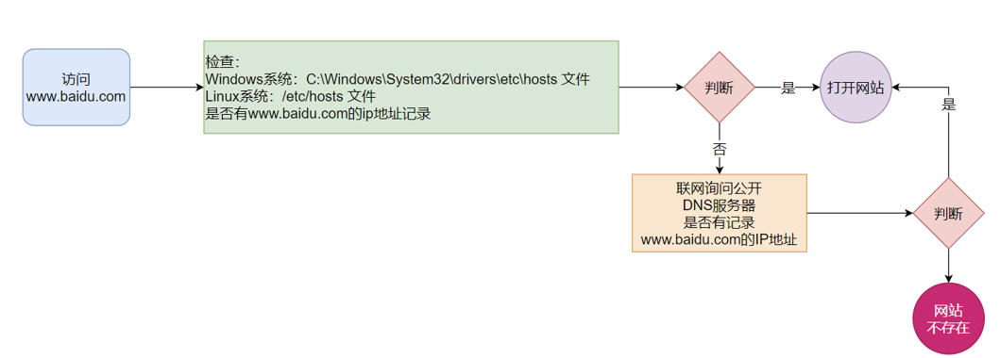

1.基础
1.操作系统
x1.操作系统是计算机软件的一种，它主要负责: 作为用户和计算机硬件之间的桥梁，调度和管理计算机硬件进行工作： 1）调度CPU进行工作 2）调度内存进行工作 3）调度硬盘进行数据存储 4）调度网卡进行网络通讯 5）调度音响发出声音 6）调度打印机打印内容 ... //计算机如果没有操作系统，就是一堆无法使用的塑料而已 //例子： 用户A（发送：你好）--->微信--->操作系统--->网卡驱动--->网卡（发数据包）--->微信服务器--->网卡--->网卡驱动--->操作系统--->微信--->用户B
2.常见操作系统： 1）个人电脑系统：windows、macOS、linux（多用于服务器） 2）移动设备系统：android、ios、harmonyOS 2.Linux系统
xxxxxxxxxx1.linux的诞生 Linux创始人:林纳斯托瓦兹 Linux诞生于1991年，作者上大学期间因为创始人在上大学期间经常需要浏览新闻和处理邮件，发现现有的操作系统不好用，于是他决心自己写一个保护模式下的操作系统，这就是Linux的原型， 当时他21岁，后来经过全世界网友的支持,现在能够兼容多种硬件，成为最为流行的服务器操作系统之一。2.linux内核 1）Linux系统的组成如下: i.Linux系统内核 ii.系统级应用程序 //内核提供系统最核心的功能，如:调度CPU、调度内存、调度文件系统、调度网络通讯、调度IO等 //系统级应用程序，可以理解为出厂自带程序，可供用户快速上手操作系统，如:文件管理器、任务管理器、图片查看、音乐播放等 2）linux内核下载： 可以看出，内核是Linux操作系统最核心的所在，系统级应用程序只是锦上添花 Linux内核是免费开源的，任何人都可以下载内核源码并查看且修改，可以通过: https: / / www.kernel.org去下载Linux内核 3）linux发行版： 内核是免费、开源的，这也就代表了: i.任何人都可以获得并修改内核，并且自行集成系统级程序 ii.提供了内核+系统级程序的完整封装，称之为Linux发行版 //linux发行版有很多，本教程用的是CentOS /*不同的发行版︰ 基础命令100%是相同的〈课程讲解内容) 部分操作不同（如软件安装) 不用纠结选择什么发行版，不论用什么发行版,都是Linux，学到的东西都是通用的*/3.虚拟机
xxxxxxxxxx1.问题： 在学习阶段，没有linux系统的电脑，例如把windows系统重装为linux，代价太大， 可以使用虚拟机软件，在windows上用虚拟机安装linux系统 2.解决： 借助虚拟化技术，我们可以在系统中，通过软件︰模拟计算机硬件，并给虚拟硬件安装真实的操作系统， 这样，就可以在电脑中，虚拟出一个完整的电脑，以供我们学习Linux系
3.vmware软件： 课程选用VMware WorkStation软件来提供虚拟机。 下载地址: https://www.vmware.com/cn/products/workstation-pro.html //软件是收费的，可以下载带秘钥的破解版学习使用 /*安装完成后，可以到windows下网络连接（win+r--->ncpa.cpl命令，快速进入）检查有没有 VMware Network Adapter WMnet1、VMware Network Adapter WMnet8的虚拟网卡（没有就需要重新安装）*/ //这里用的是vmware16.0
4.vmware上安装centos： 1）下载：首先，我们需要下载操作系统的安装文件，本次使用CentOS7.6版本进行学习:https://vault.centos.org/7.6.1810/isos/x86_64/(最后的/不要漏掉) 或者：阿里开源镜像站：https://developer.aliyun.com/mirror/ 清华大学开源镜像站：https://mirrors.tuna.tsinghua.edu.cn/ 腾讯开源镜像站：https://mirrors.cloud.tencent.com/ //阿里云：centos--->下载地址--->找到并点击“7/”--->找到并点击“isos/”--->“x86_64/”--->找到4.4GB大小的镜像文件并点击开始下载 //这里选择的大版本7 2）安装： vmware--->创建新的虚拟机--->典型（新手简单些）--->安装光盘镜像文件（浏览选择下载的centos）--->下一步--->用门名密码（没有直接下一步） --->虚拟机名字位置可以默认--->虚拟硬盘20GB（可以改为40GB）--->可以自定义硬件--->完成（开始安装）--->根据提示安装 //注意：在centos的安装配置管理器梨，可以添加图形化界面 //重启后还需要同意协议，就可以登录进入centos的图形界面了 //联网：应用程序--->系统工具--->设置--->网络（注意不是wifi）---有线--->打开
5.虚拟机快照： 1）问题： 在学习阶段我们无法避免的可能损坏Linux操作系统，如果损坏的话,重新安装一个Linux操作系统就会十分麻烦 VMware虚拟机(Workstation和Funsion)支持为虚拟机制作快照，通过快照将当前虚拟机的状态保存下来,在以后可以通过快照恢复虚拟机到保存的状态 2）方法： i.创建：vmware下关闭系统--->右键系统--->快照--->快照管理器--->拍摄快照--->名字+描述--->拍摄快照 ii.使用：vmware下关闭系统--->右键系统--->快照--->快照管理器--->选择一个快照保存点--->转到--->是
4.远程连接linux系统
xxxxxxxxxx1.对于操作系统的使用，有2种使用形式： 1）图形化页面使用操作系统 2）以命令的形式使用操作系统 //不论是Windows还是Linux亦或是MacOS系统，都是支持这两种使用形式 图形化:使用操作系统提供的图形化页面，以获得图形化反馈的形式去使用操作系统 命令行:使用操作系统提供的各类命令，以获得字符反馈的形式去使用操作系统 2.linu系统下: 尽管图形化是大多数人使用计算机的第一选择，但是在Linux操作系统上，这个选择被反转了 无论是企业开发亦或是个人开发，使用Linux操作系统，多数都是使用的:命令行 这是因为: i.Linux从诞生至今，在图形化页面的优化上，并未重点发力。所以Linux操作系统的图形化页面∶不好用、不稳定 ii.在开发中，使用命令行形式，效率更高，更加直观，并且资源占用低，程序运行更稳定
3.FinalShell介绍： 1）既然决定使用命令行去学习Linux操作系统，那么就必须丰富一下工具的使用 2）我们使用VMware可以得到Linux虚拟机，但是在VMware中操作Linux的命令行页面不太方便，主要是: i.内容的复制、粘贴跨越VMware不方便 ii.文件的上传、下载跨越VMware不方便 iii.也就是和Linux系统的各类交互，跨越VMware不方便 3）我们可以通过第三方软件，FinalShell，远程连接到Linux操作系统之上。并通过FinalShell去操作Linux系统， 这样各类操作都会十分的方便
FinalShell的下载地址为: Windows: http: //www.hostbuf.com/downloads/finalshell_install.exe Mac: http: //www.hostbuf.com/downloads/finalshell_install.pkg2.FinalShell使用： 1）在centos系统下--->终端--->ifconfig--->ens33:ip地址：192.168.xx.xxx 2）FinalShell软件下--->点击上方文件夹图标--->左上角白色小加号--->SSH连接（Linux）--->配置: 名字：centos系统（随意） 主机：要连接的系统ip地址，端口不用改 centos的用户名、密码 --->确定--->双击连接下的系统（刚才新建的）--->接受并保存
2.Linux入门
1.Linux基础
1.linux目录结构
xxxxxxxxxx1.基础： 1）Linux的目录结构是一个树型结构 2）Windows系统可以拥有多个盘符，如C盘、D盘、E盘，路径用\分割 3）Linux没有盘符这个概念，只有一个根目录/，所有文件都在它下面，路径用/分割 /*linux下：开头的/表示根目录 后面的/表示层级关系*/
2.路径
xxxxxxxxxx1.介绍： 1）绝对路径:以根目录为起点，描述路径的一种写法，路径描述以/开头 2）相对路径:以当前目录为起点，描述路径的一种写法，路径描述无需以/开头 例如： 绝对路径写法：cd /home/itheima/Desktop 相对路径写法：cd Desktop2.特殊路径符： 1）.表示当前目录，比如cd ./Desktop表示切换到当前目录下的Desktop目录内，和cd Desktop效果一致 2）..表示上一级目录，比如: cd ..即可切换到上一级目录，cd ../..切换到上二级的目录 3）~表示HOME目录，比如:cd即可切换到HOME目录或cd ~/Desktop,切换到HOME内的Desktop目录
3.VI/VIM编辑器
xxxxxxxxxx1.介绍 vi/vim是visual interface的简称，是Linux中最经典的文本编辑器 同图形化界面中的文本编辑器一样，vi是命令行下对文本文件进行编辑的绝佳选择 vim是vi的加强版本，兼容vi的所有指令，不仅能编辑文本，而且还具有shell程序编辑的功能，可以不同颜色的字体来辨别语法的正确性，极大方便了程序的设计和编辑性
2.vi/vim编辑器的三种工作模式 (1)命令模式 命令模式下，所敲的按键编辑器都理解为命令，以命令驱动执行不同的功能 此模型下，不能自由进行文本编辑 (2)输入模式 也就是所谓的编辑模式、插入模式 此模式下，可以对文件内容进行自由编辑 (3)底线命令模式 通常用于文件的保存、退出 3.命令模式 如果需要通过vi/vim编辑器编辑文件，请通过如下命令： vi 文件路径 vim 文件路径 //两个，写一个就行，推荐用vim 注意: vim兼容全部的vi功能，后续全部使用vim命令 如果文件路径表示的文件不存在，那么此命令会用于编辑新文件 如果文件路径表示的文件存在，那么此命令用于编辑已有文件 4.vi编辑器的使用步骤 (1)通过vi/vim命令编辑文件，会打开一个新的窗口，此时这个窗口就是：命令模式窗口命令模式是vi编辑器的入口和出口，如下图 (2)进入vi编辑器会进入命令模式 (3)通过命令模式输入键盘指令，可以进入输入模式 (4)输入模式需要退回到命令模式，然后通过命令可以进入底线命令模式
5.快速体验 (1)使用：vim hello.txt，编辑一个新文件，执行后进入的是命令模式 (2)在命令模式内，按键盘 i ，进入输入模式 (3)在输入模式内输入：itheima and itcast. (4)输入完成后，按esc回退会命令模式 (5)在命令模式内，按键盘 : ，进入底线命令模式 (6)在底线命令内输入:wq，保存文件并退出vi编辑器 6.命令模式快捷键 i，在当前光标位置进入输入模式 a，在当前光标位置之后进入输入模式 I，在当前行的开头进入输入模式 A，在当前行的结尾进入输入模式 o，在当前光标的下一行进入输入模式 O，在当前光标的上一行进入输入模式 esc，任何情况下输入esc都能退回到命令模式 
xxxxxxxxxx7.命令模式其他快捷指令 xxxxxxxxxx8.底线命令模式快捷指令 :wq，保存并退出 :q，仅退出 :q!，强制退出 :w，仅保存 :set nu，显示行号 :set paste，设置粘贴模式 2.linux命令基础
xxxxxxxxxx1.介绍： 1）学习Linux，本质上是学习在命令行下熟练使用Linux的各类命令 2）命令行：即Linux终端（Terminal)，是一种命令提示符页面。以纯“字符”的形式操作系统，可以使用各种字符化命令对系统发出操作指令 3）命令:即Linux程序。一个命令就是一个Linux的程序。命令没有图形化页面,可以在命令行(终端中)提供字符化的反馈 2.linux命令基础格式:无论是什么命令，用于什么用途,在Linux中，命令有其通用的格式:command [-options] [parameter] command:命令本身 -options: [可选，非必填]命令的一些选项，可以通过选项控制命令的行为细节 parameter: [可选,非必填]命令的参数,多数用于命令的指向目标等 //语法中的[]，表示可选的意思
//示例: ls -l/home/itheima ls是命令本身，-l是选项，/home/itheima是参数 意思是以列表的形式，显示/home/itheima目录内的内容 cp -r test1 test2 cp是命令本身，r是选项，test1和test2是参数 意思是复制文件夹test1成为test2 1.当前工作目录
xxxxxxxxxx1.介绍： 1）直接输入ls命令，表示列出当前工作目录下的内容，当前工作目录是Linux系统的命令行终端，在启动的时候，默认会加载 2）当前登录用户的HOME目录作为当前工作目录，所以ls命令列出的是HOME目录的内容. HOME目录:每个Linux操作用户在Linux系统的个人账户目录,路径在:/home/用户名 i.如Linux用户是itheima，其HOME目录是:/home/itheima ii.windows系统和Linux系统,均设有用户的HOME目录,如图: //工作目录（HOME目录），就是图形化桌面路径：/home/用户名/ //每个用户都有一个自己的HOME目录，是属于用户自己的目录
//注意：Desktop(桌面)目录是在图形桌面的主目录文件夹里（即HOME目录）2.ls命令
xxxxxxxxxx1.介绍： ls命令的作用是列出目录下的内容，语法细节如下: ls [-a -l -h] [Linux路径] i.-a、-l 、-h是可选的选项 ii.Linux路径是此命令可选的参数 iii.当不使用选项和参数，直接使用ls命令本体，表示:以平铺形式，列出当前工作目录下的内容 //ls查看当前工作目录 //ls /：查看根目录 2.命令选项： 1）-a选项，表示:all的意思，即列出全部文件（包含隐藏的文件/文件夹) 可以看到，ls -a 对比 ls列出的内容更多了。 i.以.开头的，表示是Linux系统的隐藏文件/文件夹（只要以.开头就能自动隐藏) ii.只有通过-a选项，才能看到这些隐藏的文件/文件夹 2）-l选项，表示:以列表（竖向排列）的形式展示内容，并展示更多信息 //默认横向现实，只显示文件、文件夹名字 //-a、-l可以混合使用： ls -l -a ls -la ls -al //三种写法一样 3）-h表示以易于阅读的形式，列出文件大小，如K、M、G //-h选项必须要搭配-一起使用 3.cd和pwd命令
xxxxxxxxxx1.cd命令： 1）当Linux终端（命令行)打开的时候，会默认以用户的HOME目录作为当前的工作目录我们可以通过cd命令，更改当前所在的工作目录。 2）cd命令来自英文:Change Directory 3）语法: cd [Linux路径] cd命令无需选项，只有参数，表示要切换到哪个目录下. cd命令直接执行，不写参数，表示回到用户的HOME目录 例如：cd / //进入根目录[yuan@localhost ~]会变成[yuan@localhost /] 2.pwd命令： 1）问题：通过ls来验证当前的工作目录，其实是不恰当的 2）我们可以通过pwd命令，来查看当前所在的工作目录。pwd命令来自:Print Work Directory 3）语法:pwd pwd命令，无选项，无参数，直接输入pwd即可 //会打印当前工作目录路径 4.mkdir命令
xxxxxxxxxx1.介绍： 1）通过mkdir命令可以创建新的目录（文件夹)mkdir来自英文:Make Directory 2）语法:mkdir [-p] Linux路径 参数必填，表示Linux路径，即要创建的文件夹的路径，相对路径或绝对路径均可 -p选项可选，表示自动创建不存在的父目录，适用于创建连续多层级的目录2.注意： 1）创建文件夹需要修改权限﹐请确保操作均在HOME目录内，不要在HOME外操作涉及到权限问题，HOME外无法成功，后续会讲
5.文件操作命令
xxxxxxxxxx1.touch命令 可以通过touch命令创建文件 语法:touch Linux路径 touch命令无选喷，参数必填，表示要创建的文件路径（相对、绝对、特殊路径符均可以使用） 例子:touch test.txt /*文件夹名字是深蓝色、文件是白色 文件有后缀 用ls -l后，文件夹第一个字母是d，文家是- */ 2.cat命令 可以通过cat命令查看文件内容，文件的内容会被输出到控制台 语法:cat Linux路径 cat没有选项，参数必填，表示要查看的文件路径（相对、绝对、特殊路径符均可以使用） 3.more命令 more也可以查看文件内容，与cat不同，cat会把文件的全部内容显示出来，而more支持翻页，文件内容如果过多，可以一页一页显示 语法:more Linux路径 more没有选项，参数必填，表示要查看的文件路径（相对、绝对、特殊路径符均可以使用） 例子：more /etc/services //查看系统文件，空格翻页，q退出 4.cp命令 cp命令用于复制文件/文件夹 语法:cp [-r] 参数1 参数2 选项:-r，可选，用于复制文件夹使用，表示递归 参数：参数1:被复制的文件/文件夹路径 参数2：要复制去的地方的路径 5.mv命令 mv命令可以移动文件/文件夹 语法:mv 参数1 参数2 参数：参数1:被移动的文件/文件夹的路径 参数2:要移动到的地方的路径，如果不存在，就会变成改名，例如:mv test1.txt test2.txt //如果test2.txt不存在，则直接将test1改名为test2
6.rm命令 rm命令可用于删除文件/文件夹 语法:rm [-r -f] 参数1 参数2 ... 参数n 选项：-r用于删除文件夹，表示递归 -f，强制删除，不会弹出提示确认信息 i.普通用户删除内容不会弹出提示，只有root管理员删除内容会有提示 ii.所以一般用户用不到-f选项（没提示，容易误操作，不安全） /* su -root，然后输入密码，就可以切换到root用户 exit命令退回普通用户 */ 参数:参数1、参数2、...参数n，表示要删除的多个文件/文件夹的路径，用空格隔开 拓展： rm命令支持通配符*，用来模糊匹配 *可以匹配任意内容 test* //匹配test开头的内容 *test //匹配test结尾的内容 *test* //匹配包含test的呢荣光 例子：删除test开头的文件或文件夹 rm -r test* xxxxxxxxxx注意:rm是一个危险的命令，特别是处于root用户时，谨慎使用rm -rf /rm -rf /* //都相当于windows下的C盘格式化，很危险
xxxxxxxxxx7.which命令 linux的本体，实际就是一些二进制的可执行程序，和windows下的.exe文件一样 which命令可以linux命令的程序文件存放的位置 语法:which 要查看的命令 例子:which cd //查看cd命令程序文件存在哪 8.find命令 find命令可以通过文件名、或文家大小查找文件，返回路径 //一般可以在root用户，可以从根目录开始搜索 语法:find 起始路径 -name "被查找文件名" //起始路径，就是在哪里找 拓展：find按文件名查找文件，也可以用通配符* 语法:find 起始路径 -size +|- n[kMG] //按大小搜索文件 说明:+、-表示大于、小于 n表示数字 kMG表示单位，kB、MB、GB //注意k是小写，M、G都是大写 例子:find / -size -10k //查找小于10kB的文件 9.grep命令 grep命令，可以从文件中通过关键字过滤文件行 语法:grep [-n] 关键字 文件路径 选项:-n，可选，表示在结果中显示匹配的行和行号 参数:关键字，必填，表示过滤的关键字，带有空格或其它特殊符号时，建议用""将关键字包围起来 文件路径，必填，表示要过滤内容的文件路径，作为内容输入端口 例子: grep -n "itheima" test.txt //在test.txt中寻找包含"itheima"的所有行，并返回
10.wc命令 wc命令可以统计文件行数、单词数量等 语法:wc [-c -m -l -w] 文件路径 选项:-c，统计bytes(字节)数量，即文件大小 -m，统计字符数量 -l，统计行数 -w，统计单词数量 //选项不写，则依次显示:行数 单词数量 字节数 文件名.后缀 参数:文件路径，被统计的文件，可作为内容输入端口 11.管道符 学习了grep命令之后，需要学习一个新的符号，管道符:| //英文输入法，C语言的或运算符 管道符用于将左边命令的结果，作为右边命令的输入 例子:cat itheima.txt | grep itheima //此处cat输出itheima的内容给作为grep的内容输入，因为grep的文件路径参数可以作为内容输入端口，接收左侧输出的内容 cat test.txt | wc -l ls | grep test cat test.txt | grep itcast | grep itheima //管道符可以嵌套使用 12.echo命令 echo命令可以在命令行输出指定内容，相当于C语言的printf 语法:echo 输出的内容 无需选项，只有一个参数，表示要输出的内容，如果内容复杂，可以用""包围起来 例子:echo "Hello Linux" 扩展:用反引号包围，作为命令执行，而不是普通字符 echo pwd //输出结果为pwd三个字符 echo `pwd` //为pwd加上反引号，会先执行pwd命令，再将其结果打印输出
13.重定向符>和>> >将左侧命令的结果，覆盖写入到符号右侧指定的文件中 >>将左侧命令的结果，追加写入到符号右侧指定的文件中 例子: echo "hello linux" > test.txt ls > test.txt
14.tail命令 tail可以查看文件尾部的内容，跟踪文件的最新更改 语法:tail [-f -num] Linux路径 选项:-f，表示持续跟踪 //ctrl+c可以强制停止跟踪 -num，表示产看尾部多少行，不填默认10行 参数:Linux路径，表示被跟踪的文件的路径 6.--help选项
xxxxxxxxxx任何命令都支持：--help 选项， 可以通过这个选项，查看命令的帮助如：ls --help， 会列出ls命令的帮助文档
3.用户和用户组
1.linux用户和权限
xxxxxxxxxx1.root用户 (1)无论是Windows、MacOS、Linux均采用多用户的管理模式进行权限管理 在Linux系统中，拥有最大权限的账户名为：root（超级管理员） 而在前期，我们一直使用的账户是普通的用户 (2)root用户拥有最大的系统操作权限，而普通用户在许多地方的权限是受限的 使用普通用户在根目录下创建文件夹，而root用户可以 (3)普通用户的权限，一般在其HOME目录内是不受限的 一旦出了HOME目录，大多数地方，普通用户仅有只读和执行权限，无修改权限
2.su和exit命令 su命令可以切换到root账户 语法：su [-][用户名] 选项:-符号是可选的，表示是否在切换用户后加载环境变量（后续讲解），建议带上 参数:用户名，表示要切换的用户，用户名也可以省略，省略表示切换到root 说明:i.切换用户后，可以通过exit命令退回上一个用户，也可以使用快捷键：ctrl + d ii.使用普通用户，切换到其它用户需要输入密码，如切换到root用户 iii.使用root用户切换到其它用户，无需密码，可以直接切换
3.sudo命令 注意:在我们得知root密码的时候，可以通过su命令切换到root得到最大权限，但是我们不建议长期使用root用户，避免带来系统损坏 我们可以使用sudo命令，为普通命令授权，临时以root身份执行。 语法:sudo 其他命令 说明: i.在其它命令之前，带上sudo，即可为这一条命令临时赋予root授权 ii.但是并不是所有的用户，都有权利使用sudo，我们需要为普通用户配置sudo认证
4.为普通用户配置sudo认证(1)切换到root用户，执行visudo命令，会自动通过vi编辑器打开：/etc/sudoers(2)在文件的最后添加:用户名 ALL=(ALL) NOPASSWD:ALL //其中最后的NOPASSWD:ALL 表示使用sudo命令，无需输入密码(3)最后wq保存
2.用户和用户组
xxxxxxxxxx1.介绍 (1)Linux系统中可以： i.配置多个用户 ii.配置多个用户组 iii.用户可以加入多个用户组中 (2)Linux中关于权限的管控级别有2个级别，分别是： i.针对用户的权限控制 ii.针对用户组的权限控制 比如，针对某文件，可以控制用户的权限，也可以控制用户组的权限
2.用户组管理 //以下命令需root用户执行 (1)创建用户组 groupadd 用户组名
(2)删除用户组 groupdel 用户组名
3.用户管理 //以下命令需root用户执行 (1)创建用户 useradd [-g -d] 用户名 选项：-g，指定用户的组，不指定-g，会创建同名组并自动加入，指定-g需要组已经存在，如已存在同名组，必须使用-g 选项：-d指定用户HOME路径，不指定，HOME目录默认在：/home/用户名 //例子：useradd -g 用户名 用户组名 -d /home/用户名 (2)删除用户 userdel [-r] 用户名 选项：-r，删除用户的HOME目录，不使用-r，删除用户时，HOME目录保留 (3)查看用户所属组 id [用户名] 参数：用户名，被查看的用户，如果不提供则查看自身 (4)修改用户所属组 usermod -aG 用户组 用户名 将指定用户加入指定用户组 4.getent命令 (1)使用getent命令，可以查看当前系统中有哪些用户和哪些用户组 语法： getent passwd //注意此处passwd不是让输入密码，就是passwd这几个字符 返回信息:共有7份信息 用户名:密码(x):用户ID:组ID:描述信息(无用):HOME目录:执行终端(默认bash) (2)使用getent命令，同样可以查看当前系统中有哪些用户组 语法：getent group 返回信息:包含3份信息 组名称:组认证(显示为x):组ID
3.权限控制
xxxxxxxxxx1.查看权限通过ls -l 可以以列表形式查看内容，并显示权限细节 序号1，表示文件、文件夹的权限控制信息 序号2，表示文件、文件夹所属用户 序号3，表示文件、文件夹所属用户组 xxxxxxxxxx2.认知权限 (1)序号1的权限细节 i.例子：drwxr-xr-x，表示： 这是一个文件夹，首字母d表示 所属用户(右上角图序号2)的权限是：有r有w有x，rwx 所属用户组(右上角图序号3)的权限是：有r无w有x，r-x （-表示无此权限） 其它用户的权限是：有r无w有x，r-x ii.rwx的意思 r表示读权限 w表示写权限 x表示执行权限 //针对文件、文件夹的不同，rwx的含义有细微差别 r，针对文件可以查看文件内容 针对文件夹，可以查看文件夹内容，如ls命令 w，针对文件表示可以修改此文件 针对文件夹，可以在文件夹内：创建、删除、改名等操作 x，针对文件表示可以将文件作为程序执行 针对文件夹，表示可以更改工作目录到此文件夹，即cd进入4.修改权限控制
xxxxxxxxxx1.chmod命令 chmod命令可以修改文件、文件夹的权限信息 //注意，只有文件、文件夹的所属用户或root用户可以修改权限 语法:chmod [-R] 权限 文件或文件夹 选项：-R，对文件夹内的全部内容应用同样的操作 例子: chmod u=rwx,g=rx,o=x hello.txt //将文件权限修改为：rwxr-x--x //其中：u表示user所属用户权限，g表示group组权限，o表示other其它用户权限 chmod -R u=rwx,g=rx,o=x test //将文件夹test以及文件夹内全部内容权限设置为：rwxr-x--x chmod 751 hello.txt //快捷写法,将hello.txt的权限修改为751
2.权限的数字序号 权限可以用3位数字来代表，第一位数字表示用户权限，第二位表示用户组权限，第三位表示其它用户权限 数字的细节如下：r记为4，w记为2，x记为1，可以有： 0：无任何权限， 即 --- 1：仅有x权限， 即 --x 2：仅有w权限 即 -w- 3：有w和x权限 即 -wx 4：仅有r权限 即 r-- 5：有r和x权限 即 r-x 6：有r和w权限 即 rw- 7：有全部权限 即 rwx //所以751表示： rwx(7) r-x(5) --x(1) 3.chown命令 chown命令可以修改文件、文件夹的所属用户和用户组 //普通用户无法修改所属为其它用户或组，所以此命令只适用于root用户执行 语法：chown [-R] [用户][:][用户组] 文件或文件夹 选项:-R，同chmod，对文件夹内全部内容应用相同规则 用户，修改所属用户 用户组，修改所属用户组 :用于分隔用户和用户组 例子： chown root hello.txt //将hello.txt所属用户修改为root chown :root hello.txt //将hello.txt所属用户组修改为root chown root:itheima hello.txt //将hello.txt所属用户修改为root，用户组修改为itheima chown -R root test //将文件夹test的所属用户修改为root并对文件夹内全部内容应用同样规则 4.Linux实用技巧
1.快捷键
xxxxxxxxxx1.ctrl+c强制停止 i.Linux某些程序的运行，如果想要强制停止它，可以使用快捷键ctrl + c ii.命令输入错误，也可以通过快捷键ctrl + c，退出当前输入，重新输入
2.ctrl+d退出或登出 i.可以通过快捷键：ctrl + d，退出账户的登录 ii.或者退出某些特定程序的专属页面 iii.不能用于退出vi/vim，可以退出python //linux自带python 3.history历史命令搜索 可以通过history命令，查看历史输入过的命令 4.!自动匹配历史命令 !命令前缀，自动执行上一次匹配前缀的命令 例子: 前面使用过python命令，下一次直接!p就可以，会在历史中从下往上找第一个p开头的 //只能再次用不久前的命令，太久了容易出错 5.ctrl + r输入内容去匹配历史命令 可以通过快捷键：ctrl + r，输入内容去匹配历史命令 如果搜索到的内容是你需要的，那么： 回车键可以直接执行 键盘左右键，可以得到此命令（不执行）
6.光标移动快捷键 ctrl + a，跳到命令开头 ctrl + e，跳到命令结尾 ctrl + 键盘左键，向左跳一个单词 ctrl + 键盘右键，向右跳一个单词 7.清屏 通过快捷键ctrl + l，可以清空终端内容 或通过命令clear得到同样效果2.软件安装
xxxxxxxxxx1.介绍操作系统安装软件有许多种方式，一般分为： (1)下载安装包自行安装 如win系统使用exe文件、msi文件等 如mac系统使用dmg文件、pkg文件等 //linux系统的软件包后缀名为rpm (2)系统的应用商店内安装 如win系统有Microsoft Store商店 如mac系统有AppStore商店 //Linux系统同样支持这两种方式，我们首先，先来学习使用：Linux命令行内的”应用商店”，yum命令安装软件
2.yum命令 yum：RPM包软件管理器，用于自动化安装配置Linux软件，并可以自动解决依赖问题。 语法：yum [-y] [install | remove |search] 软件名称 选项：-y，自动确认，无需手动确认安装或卸载过程 install，安装 remove，卸载 search，搜索 //yum命令需要root权限，可以su切换到root，或使用sudo提权。 //yum命令需要联网 例子: yum search wget //通过yum命令，搜索是否有wget安装包 yum install wget //通过yum命令安装wget程序 yum remove wget //通过yum命令卸载wget命令 3.apt命令 前面学习的各类Linux命令，都是通用的，但是软件安装，CentOS系统和Ubuntu是使用不同的包管理器 CentOS使用yum管理器，Ubuntu使用apt管理器 //centos软件包后缀是rpm，ubuntu是deb 通过前面学习的WSL环境，我们可以得到Ubuntu运行环境 语法：apt [-y] [install | remove |search] 软件名称 //用法和yum一致，同样需要root权限 apt install wget //安装wget apt remove wget //移除wget apt search wget //搜索wget3.软件控制
xxxxxxxxxx1.Linux系统很多软件（内置或第三方）均支持使用systemctl命令控制：启动、停止、开机自启 能够被systemctl管理的软件，一般也称之为：服务 语法：systemctl start | stop | status | enable |disable 服务名 选项: start，启动 stop，关闭 status，查看状态 enable，开启开机自启 disable，关闭开机自启
系统内置的服务比较多，比如： NetworkManager，主网络服务 network，副网络服务 firewalld，防火墙服务 sshd，ssh服务（FinalShell远程登录Linux使用的就是这个服务） 2.除了内置的服务以外，部分第三方软件安装后也可以以systemctl进行控制 yum install -y ntp //安装ntp软件 可以通过ntpd服务名，配合systemctl进行控制 yum install -y httpd //安装apache服务器软件 可以通过httpd服务名，配合systemctl进行控制
//部分软件安装后没有自动集成到systemctl中，我们可以手动添加，后面讲解 4.软链接
xxxxxxxxxx在系统中创建软链接，可以将文件、文件夹链接到其它位置，类似Windows系统中的《快捷方式》 语法：ln -s 参数1 参数2 选项:-s选项，创建软连接 参数:参数1：被链接的文件或文件夹 参数2：要链接去的目的地 例子： ln -s /etc/yum.conf ~/yum.conf ln -s /etc/yum ~/yum5.日期时区
xxxxxxxxxx1.date命令 通过date命令可以在命令行中查看系统的时间 语法:date [-d] [+格式化字符串] 选项:-d 按照给定的字符串显示日期，一般用于日期计算
格式化字符串：通过特定的字符串标记，来控制显示的日期格式 %Y 年 %y 年份后两位数字 (00..99) %m 月份 (01..12) %d 日 (01..31) %H 小时 (00..23) %M 分钟 (00..59) %S 秒 (00..60) %s 自 1970-01-01 00:00:00 UTC 到现在的秒数 例子: 使用date命令本体，无选项，直接查看时间，格式非常的不习惯，我们可以通过格式化字符串自定义显示格式 date +%Y-%m-%d date "+%Y-%m-%d %H:%M:%S" //中间有空格，可以用引号引起来
-d选项，可以按照给定的字符串显示日期，一般用于日期计算 date -d "+1 day" +%Y%%d //显示后一天的日期 date -d "-1 day" +%Y%%d //显示前一天的日期 date -d "-1 month" +%Y%%d //显示上一月的日期 date -d "+1 month" +%Y%%d //显示下一月的日期 date -d "-1 year" +%Y%%d //显示前一年的日期 date -d "+1 year" +%Y%%d //显示下一年的日期 其中支持的时间标记为： year年 month月 day天 hour小时 minute分钟 second秒 //-d选项可以和格式化字符串配合一起使用
2.修改Linux时区 //通过date查看的日期时间是不准确的，这是因为系统默认时区非中国的东八区 使用root权限，执行如下命令，修改时区为东八区时区 rm -f /etc/localtime sudo ln -s /usr/share/zoneinfo/Asia/Shanghai /etc/localtime date //将系统自带的localtime文件删除，并将/usr/share/zoneinfo/Asia/Shanghai文件链接为localtime文件即可 3.npt程序 (1)我们可以通过ntp程序自动校准系统时间 安装ntp：yum -y install ntp 启动并设置开机自启： systemctl start ntpd systemctl enable ntpd //当ntpd启动后会定期的帮助我们联网校准系统的时间 (2)也可以手动校准（需root权限）： ntpdate -u ntp.aliyun.com //通过阿里云提供的服务网址配合ntpdate（安装ntp后会附带这个命令）命令自动校准6.IP地址和主机名
xxxxxxxxxx1.IP地址 每一台联网的电脑都会有一个地址，用于和其它计算机进行通讯 IP地址主要有2个版本，V4版本和V6版本（V6很少用，课程暂不涉及） IPv4版本的地址格式是：a.b.c.d，其中abcd表示0~255的数字，如:192.168.88.101就是一个标准的IP地址 可以通过命令：ifconfig，查看本机的ip地址 如无法使用ifconfig命令，可以安装：yum -y install net-tools /*返回值:ens33就是主网卡，第二行inet 192.168.236.129就是本机IP地址，只用关心这个就行 lo:本地回环网卡 vurbr0:虚拟机专用虚拟网卡 */2.特殊IP地址 除了标准的IP地址以外，还有几个特殊的IP地址需要我们了解： 127.0.0.1，这个IP地址用于指代本机 0.0.0.0，特殊IP地址: i.可以用于指代本机 ii.可以在端口绑定中用来确定绑定关系（后续讲解） iii.在一些IP地址限制中，表示所有IP的意思，如放行规则设置为0.0.0.0，表示允许任意IP访问
3.主机名: (1)每一台电脑除了对外联络地址（IP地址）以外，也可以有一个名字，称之为主机名 无论是Windows或Linux系统，都可以给系统设置主机名 Windows系统主机名 设置名称 Linux系统主机名 hostname //查看名称 (2)修改主机名 hostnamectl set-hostname 主机名 //修改主机名 //重启系统，就可以看到主机名变了 //控制台左端就是:用户名@主机名 3.域名解析 IP地址实在是难以记忆，有没有什么办法可以通过主机名或替代的字符地址去代替数字化的IP地址呢？ 实际上，我们一直都是通过字符化的地址去访问服务器，很少指定IP地址 比如，我们在浏览器内打开：www.baidu.com，会打开百度的网址 其中，www.baidu.com，是百度的网址，我们称之为：域名 访问www.baidu.com的流程如下 i.先查看本机的记录（私人地址本） Windows看：C:\Windows\System32\drivers\etc\hosts Linux看：/etc/hosts ii.再联网去DNS服务器（如114.114.114.114h或8.8.8.8等）询问

xxxxxxxxxx4.配置主机名映射 比如，我们FinalShell是通过IP地址连接到的Linux服务器，那有没有可能通过域名（主机名）连接呢？ 可以，我们只需要在Windows系统的：C:\Windows\System32\drivers\etc\hosts文件中配置记录即可 管理员运行打开hosts文件，在最后一行添加192.168.xxx.xxx 主机名(要连接的linux主机名) 192.168.88.130 centos 5.配置固定ip (1)为什么需要固定ip 当前我们虚拟机的Linux操作系统，其IP地址是通过DHCP服务获取的 DHCP：动态获取IP地址，即每次重启设备后都会获取一次，可能导致IP地址频繁变更 原因1：办公电脑IP地址变化无所谓，但是我们要远程连接到Linux系统，如果IP地址经常变化我们就要频繁修改适配很麻烦 原因2：在刚刚我们配置了虚拟机IP地址和主机名的映射，如果IP频繁更改，我们也需要频繁更新映射关系 综上所述，我们需要IP地址固定下来，不要变化了 (2)在VMware Workstation中配置固定IP 配置固定IP需要2个大步骤： i.在VMware Workstation（或Fusion）中配置IP地址网关和网段（IP地址的范围） ii.在Linux系统中手动修改配置文件，固定IP 详细步骤:i.VM--->编辑--->虚拟网络编辑器--->WMnet8--->设置子网IP： 若为192.168.88.0，就是此地址到192.168.88.254这个范围 --->子网掩码为:255.255.255.0 --->NAT设置--->网关可以设置为192.168.88.2，（在前面范围之内） ii.使用vim编辑/etc/sysconfing/network-scripts/ifcfg-ens33文件，填写内容如下 xxxxxxxxxx 执行：systemctl restart network 重启网卡，执行ifconfig即可看到ip地址固定为192.168.88.130了 6.在VMware Fusion中配置固定IP MacOS中的配置，此处省略，有需要自行搜索 7.网络传输
xxxxxxxxxx1.ping命令 可以通过ping命令，检查指定的网络服务器是否是可联通状态 语法：ping [-c num] ip地址或主机名 选项：-c，检查的次数，不使用-c选项，将无限次数持续检查 参数：ip或主机名，被检查的服务器的ip地址或主机名地址 示例： ping baidu.com //检查到baidu.com是否联通
2.wget命令 wget是非交互式的文件下载器，可以在命令行内下载网络文件 语法：wget [-b] url 选项：-b，可选，后台下载，会将日志写入到当前工作目录的wget-log文件 参数：url，下载链接 例子： 下载apache-hadoop 3.3.0版本：wget http://archive.apache.org/dist/hadoop/common/hadoop-3.3.0/hadoop-3.3.0.tar.gz 在后台下载：wget -b http://archive.apache.org/dist/hadoop/common/hadoop-3.3.0/hadoop-3.3.0.tar.gz 通过tail命令可以监控后台下载进度：tail -f wget-log //使用ctrl+c可以中断文件的下载，中断后，文件已经有了，但是不完整，需要及时清理 3.curl命令 curl可以发送http网络请求获取信息，也可用于下载文件等 语法：curl [-O] url 选项：-O，用于下载文件，当url是下载链接时，可以使用此选项保存文件 //只发请求，不下载文件，就不要写-O 参数：url，要发起请求的网络地址 //只发请求可以获得该ip的一些信息，ip，地址(中国,...)，其他数据 例子: 向cip.cc发起网络请求：curl cip.cc 向python.itheima.com发起网络请求：curl python.itheima.com 通过curl下载hadoop-3.3.0安装包：curl -O http://archive.apache.org/dist/hadoop/common/hadoop-3.3.0/hadoop-3.3.0.tar.gz
4.端口 (1)端口 端口，是设备与外界通讯交流的出入口 端口可以分为：物理端口和虚拟端口两类 物理端口：又可称之为接口，是可见的端口，如USB接口，RJ45网口，HDMI端口等 虚拟端口：是指计算机内部的端口，是不可见的，是用来操作系统和外部进行交互使用的 (2)虚拟端口 计算机程序之间的通讯，通过IP只能锁定计算机，但是无法锁定具体的程序。 通过端口可以锁定计算机上具体的程序，确保程序之间进行沟通 //IP地址相当于小区地址，在小区内可以有许多住户（程序），而门牌号（端口）就是各个住户（程序）的联系地址
(3)Linux的虚拟端口 Linux系统是一个超大号小区，可以支持65535个端口，这6万多个端口分为3类进行使用： 公认端口：1~1023，通常用于一些系统内置或知名程序的预留使用，如SSH服务的22端口，HTTPS服务的443端口非特殊需要，不要占用这个范围的端口 注册端口：1024~49151，通常可以随意使用，用于松散的绑定一些程序/服务 动态端口：49152~65535，通常不会固定绑定程序，而是当程序对外进行网络链接时，用于临时使用
(4)查看端口占用 i.使用nmap命令 //安装nmap：yum -y install nmap 语法：nmap 被查看的IP地址
可以看到，本机（127.0.0.1）上有5个端口现在被程序占用了，其中： 22端口，一般是SSH服务使用，即FinalShell远程连接Linux所使用的端口
xxxxxxxxxx ii.netstat命令，查看指定端口的占用情况 语法：netstat -anp | grep 端口号 //安装netstat：yum -y install net-tools
如图，可以看到当前系统6000端口被程序（进程号7174）占用了 其中，0.0.0.0:6000，表示端口绑定在0.0.0.0这个IP地址上，表示允许外部访问 可以看到，当前系统12345端口，无人使用8.进程管理
xxxxxxxxxx1.进程 程序运行在操作系统中，是被操作系统所管理的 为管理运行的程序，每一个程序在运行的时候，便被操作系统注册为系统中的一个进程 并会为每一个进程都分配一个独有的：进程ID（进程号）
2.查看进程 可以通过ps命令查看Linux系统中的进程信息 语法：ps [-e -f] 选项：-e，显示出全部的进程 -f，以完全格式化的形式展示信息（展示全部信息） // 一般来说，固定用法就是： ps -ef 列出全部进程的全部信息 xxxxxxxxxx3.查看制定进程信息 我们可以使用管道符配合grep来进行过滤，如： ps -ef | grep tail，即可准确的找到tail命令的信息 过滤不仅仅过滤名称，进程号，用户ID等等，都可以被grep过滤哦 如：ps -ef | grep 30001，过滤带有30001关键字的进程信息（一般指代过滤30001进程号）
4.关闭进程 在Windows系统中，可以通过任务管理器选择进程后，点击结束进程从而关闭它 同样，在Linux中，可以通过kill命令关闭进程， 语法：kill [-9] 进程ID 选项：-9，表示强制关闭进程，不使用此选项会向进程发送信号要求其关闭，但是否关闭看进程自身的处理机制9.主机状态
xxxxxxxxxx1.top命令 可以通过top命令查看CPU、内存使用情况，类似Windows的任务管理器，默认每5秒刷新一次 语法：直接输入top即可，按q或ctrl + c退出
2.top命令返回信息详解 

xxxxxxxxxxPID：进程idUSER：进程所属用户PR：进程优先级，越小越高NI：负值表示高优先级，正表示低优先级VIRT：进程使用虚拟内存，单位KBRES：进程使用物理内存，单位KBSHR：进程使用共享内存，单位KBS：进程状态（S休眠，R运行，Z僵死状态，N负数优先级，I空闲状态）%CPU：进程占用CPU率%MEM：进程占用内存率TIME+：进程使用CPU时间总计，单位10毫秒COMMAND：进程的命令或名称或程序文件路径3.top的选项-p，只显示某个进程的信息-d设置刷新时间，默认是5s-c，显示产生进程的完整命令，默认是进程名-n，指定刷新次数，比如 top -n 3，刷新输出3次后退出-b，以非交互非全屏模式运行，以批次的方式执行top，一般配合-n指定输出几次统计信息，将输出重定向到指定文件，比如top -b -n 3 > /tmp/top .tmp-i，不显示任何闲置(idle)或无用(zombie)的进程-u，查找特定用户启动的进程一u值找特定用户启动的进程4.top命令当top以交互式运行（非-b选项启动），可以用以下交互式命令进行控制按键功能h键按下h键，会显示帮助画面c键按下c键，会显示产生进程的完整命令，等同于-c参数，再次按下c键，变为默认显示f键按下f键，可以选择需要展示的项目M键―按下M键，根据驻留内存大小（RES）排序P键―按下P键，根据CPU使用百分比大小进行排序T键按下T键，根据时间/累计时间进行排序E键按下E键，切换顶部内存显示单位e键按下e键，切换进程内存显示单位1键按下1键，切换显示平均负载和启动时间信息。i键按下i键，不显示闲置或无用的进程，等同于-i参数，再次按下，变为默认显示t键按下t键，切换显示CPU状态信息m键按下m键，切换显示内存信息5,.磁盘信息监控(1)使用df命令，可以查看硬盘的使用情况语法：df [-h]选项：-h，以更加人性化的单位显示(2)可以使用iostat查看CPU、磁盘的相关信息语法：iostat [-x] [num1] [num2]选项：-x，显示更多信息num1：数字，刷新间隔，num2：数字，刷新几次(3)使用iostat的-x选项，可以显示更多信息rrqm/s： 每秒这个设备相关的读取请求有多少被Merge了（当系统调用需要读取数据的时候，VFS将请求发到各个FS，如果FS发现不同的读取请求读取的是相同Block的数据，FS会将这个请求 合并Merge, 提高IO利用率, 避免重复调用）wrqm/s： 每秒这个设备相关的写入请求有多少被Merge了rsec/s： 每秒读取的扇区数；sectorswsec/： 每秒写入的扇区数rKB/s： 每秒发送到设备的读取请求数wKB/s： 每秒发送到设备的写入请求数avgrq-sz 平均请求扇区的大小avgqu-sz 平均请求队列的长度。毫无疑问，队列长度越短越好await： 每一个IO请求的处理的平均时间（单位是微秒毫秒）svctm 表示平均每次设备I/O操作的服务时间（以毫秒为单位）%util： 磁盘利用率
xxxxxxxxxx6.网络状态监控 使用sar命令查看网络的相关统计（sar命令非常复杂，这里仅简单用于统计网络） 语法：sar -n DEV num1 num2 选项：-n，查看网络，DEV表示查看网络接口 num1：刷新间隔（不填就查看一次结束），num2：查看次数（不填无限次数）//如图，查看2次，隔3秒刷新一次，并最终汇总平均记录 10.环境变量
xxxxxxxxxx1.介绍 在讲解which命令的时候，我们知道使用的一系列命令其实本质上就是一个个的可执行程序 比如，cd命令的本体就是：/usr/bin/cd 这个程序文件 我们是否会有疑问，为何无论当前工作目录在哪里，都能执行：/usr/bin/cd这个程序呢？ 这就是环境变量的作用啦 2.环境变量 环境变量是操作系统（Windows、Linux、Mac）在运行的时候，记录的一些关键性信息，用以辅助系统运行 在Linux系统中执行：env命令即可查看当前系统中记录的环境变量 环境变量是一种KeyValue型结构，即名称和值，如下图： xxxxxxxxxx3.环境变量PATH 在前面提出的问题中，我们说无论当前工作目录是什么，都能执行/usr/bin/cd这个程序，这个就是借助环境变量中：PATH这个项目的值来做到的 PATH记录了系统执行任何命令的搜索路径，如上图记录了（路径之间以:隔开）： /usr/local/bin /usr/bin /usr/local/sbin /usr/sbin /home/itheima/.local/bin /home/itheima/bin 当执行任何命令，都会按照顺序，从上述路径中搜索要执行的程序的本体 比如执行cd命令，就从第二个目录/usr/bin中搜索到了cd命令，并执行xxxxxxxxxx4.$符号 在Linux系统中，$符号被用于取”变量”的值 环境变量记录的信息，除了给操作系统自己使用外，如果我们想要取用，也可以使用 取得环境变量的值就可以通过语法：$环境变量名 来取得 比如： echo $PATH //可以取得PATH这个环境变量的值，并通过echo语句输出出来 又或者：echo ${PATH}ABC //当和其它内容混合在一起的时候，可以通过{}来标注取的变量是谁
5.自行设置环境变量Linux环境变量可以用户自行设置，其中分为： 临时设置： 语法：export 变量名=变量值 永久生效： 针对当前用户生效，配置在当前用户的： ~/.bashrc文件中，写入export 变量名=变量值 针对所有用户生效，配置在系统的： /etc/profile文件中，写入export 变量名=变量值 并通过命令：source 配置文件 //进行立刻生效，或重新登录FinalShell生效
6.自定义环境变量PATH 环境变量PATH这个项目里面记录了系统执行命令的搜索路径，这些搜索路径我们也可以自行添加到PATH中去
测试： 在当前HOME目录内创建文件夹，myenv，在文件夹内创建文件mkhaha 通过vim编辑器，在mkhaha文件内填入：echo 哈哈哈哈哈 完成上述操作后，随意切换工作目录，执行mkhaha命令尝试一下，会发现无法执行
修改PATH的值：vim /etc/profile 临时修改PATH：export PATH=$PATH:/home/itheima/myenv，再次执行mkhaha，无论在哪里都能执行了 //此处是原有的PATH($PATH)追加上:/home/itheima/myenv，写在 文件最后一行 或将export PATH=$PATH:/home/itheima/myenv，填入用户环境变量文件或系统环境变量文件中去 11.上传下载
xxxxxxxxxx1.我们可以通过FinalShell工具，方便的和虚拟机进行数据交换。 在FinalShell软件的下方窗体中，提供了Linux的文件系统视图，可以方便的： 浏览文件系统，找到合适的文件，右键点击下载，即可传输到本地电脑 浏览文件系统，找到合适的目录，将本地电脑的文件拓展进入，即可方便的上传数据到Linux中xxxxxxxxxx2.rz、sz命令当然，除了通过FinalShell的下方窗体进行文件的传输以外，也可以通过rz、sz命令进行文件传输 rz、sz命令需要安装，可以通过：yum -y install lrzsz，即可安装
rz命令，进行上传，语法：直接输入rz， 会弹出文件选择框，直接选择本地(一般windows系统)文件上传 sz命令进行下载，语法：sz 要下载的远程linux系统上文件名字
/*文件会自动下载到桌面的：fsdownload文件夹中 注意，rz、sz命令需要终端软件支持才可正常运行 FinalShell、SecureCRT、XShell等常用终端软件均支持此操作 */12.压缩和解压
xxxxxxxxxx1.压缩格式市面上有非常多的压缩格式 zip格式：Linux、Windows、MacOS，常用 7zip：Windows系统常用 rar：Windows系统常用 tar：Linux、MacOS常用 gzip：Linux、MacOS常用 在Windows系统中常用的软件如：winrar、bandizip等软件，都支持各类常见的压缩格式，这里不多做讨论 我们现在要学习，如何在Linux系统中操作：tar、gzip、zip这三种压缩格式完成文件的压缩、解压操作 2.tar命令压缩文件 Linux和Mac系统常用有2种压缩格式，后缀名分别是： .tar，称之为tarball，归档文件，即简单的将文件组装到一个.tar的文件内，并没有太多文件体积的减少，仅仅是简单的封装 .gz，也常见为.tar.gz，gzip格式压缩文件，即使用gzip压缩算法将文件压缩到一个文件内，可以极大的减少压缩后的体积 针对这两种格式，使用tar命令均可以进行压缩和解压缩的操作 语法：tar [-c -v -x -f -z -C] 参数1 参数2 ... 参数n -c，创建压缩文件，用于压缩模式 -v，显示压缩、解压过程，用于查看进度 -x，解压模式 -f，要创建的文件，或要解压的文件，-f选项必须在所有选项中位置处于最后一个 -z，gzip模式，不使用-z就是普通的tarball格式 -C，选择解压的目的地，用于解压模式 tar的常用组合为： tar -cvf test.tar 1.txt 2.txt 3.txt //将1.txt 2.txt 3.txt 压缩到test.tar文件内 tar -zcvf test.tar.gz 1.txt 2.txt 3.txt //将1.txt 2.txt 3.txt 压缩到test.tar.gz文件内，使用gzip模式 //创建tar格式用第一个，gz格式第二个，这两个组合就够了 注意： -z选项如果使用的话，一般处于选项位第一个 -f选项，必须在选项位最后一个 3.tar命令解压文件 常用的tar解压组合有: tar -xvf test.tar //解压test.tar，将文件解压至当前目录 tar -xvf test.tar -C /home/itheima //解压test.tar，将文件解压至指定目录（/home/itheima） tar -zxvf test.tar.gz -C /home/itheima //以Gzip模式解压test.tar.gz，将文件解压至指定目录（/home/itheima）
注意： -f选项，必须在选项组合体的最后一位 -z选项，建议在开头位置 -C选项单独使用，和解压所需的其它参数分开
4.zip命令压缩文件 可以使用zip命令，压缩文件为zip压缩包 语法：zip [-r] 参数1 参数2 ... 参数n 选项:-r，被压缩的包含文件夹的时候，需要使用-r选项，和rm、cp等命令的-r效果一致
例子： zip test.zip a.txt b.txt c.txt //将a.txt b.txt c.txt 压缩到test.zip文件内 zip -r test.zip test itheima a.txt //将test、itheima两个文件夹和a.txt文件，压缩到test.zip文件内 5.unzip解压文件 使用unzip命令，可以方便的解压zip压缩包 语法:unzip [-d] 参数 选项:-d，指定要解压去的位置，同tar的-C选项 参数，被解压的zip压缩包文件
例子： unzip test.zip //将test.zip解压到当前目录 unzip test.zip -d /home/itheima //将test.zip解压到指定文件夹内（/home/itheima）3.Linux实战